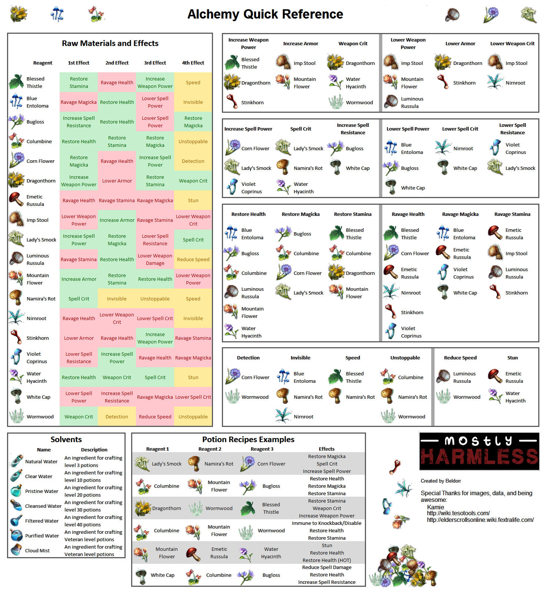

Алхимия — одно из семи ремесел, доступных для освоения игроку в The Elder Scrolls Online. Эта профессия позволяет изучать травы, другие алхимические ингредиенты и их свойства для дальнейшего приготовления ядов и снадобий. Они активно используются в странствиях по открытому миру, при выполнении ремесленных заказов, а также в серьёзном PvE- и PvP-контенте.
Скидки на товар
 Водосбор
Водосбор - товар отсутствует, нельзя добавить в корзину
 Воловик
Воловик - товар отсутствует, нельзя добавить в корзину
 Жгучеедкая сыроежка
Жгучеедкая сыроежка - товар отсутствует, нельзя добавить в корзину
Для того, чтобы вы могли выбрать правильный товар, прилагаем краткую подсказку по крафту зелий. Так вы сможете определить, что именно вам необходимо преобрести.
